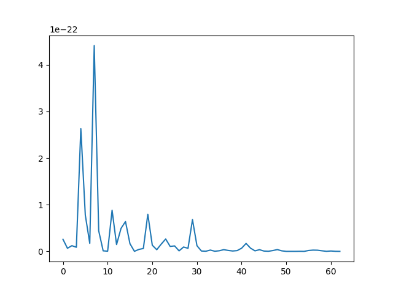
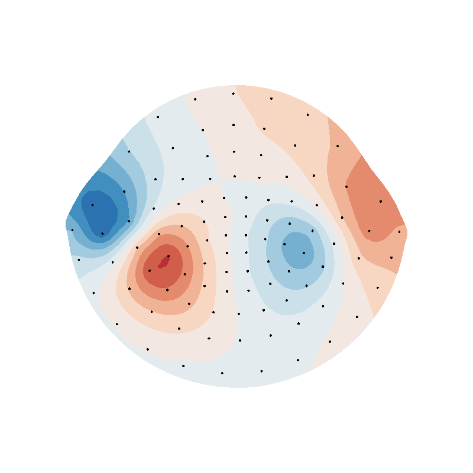
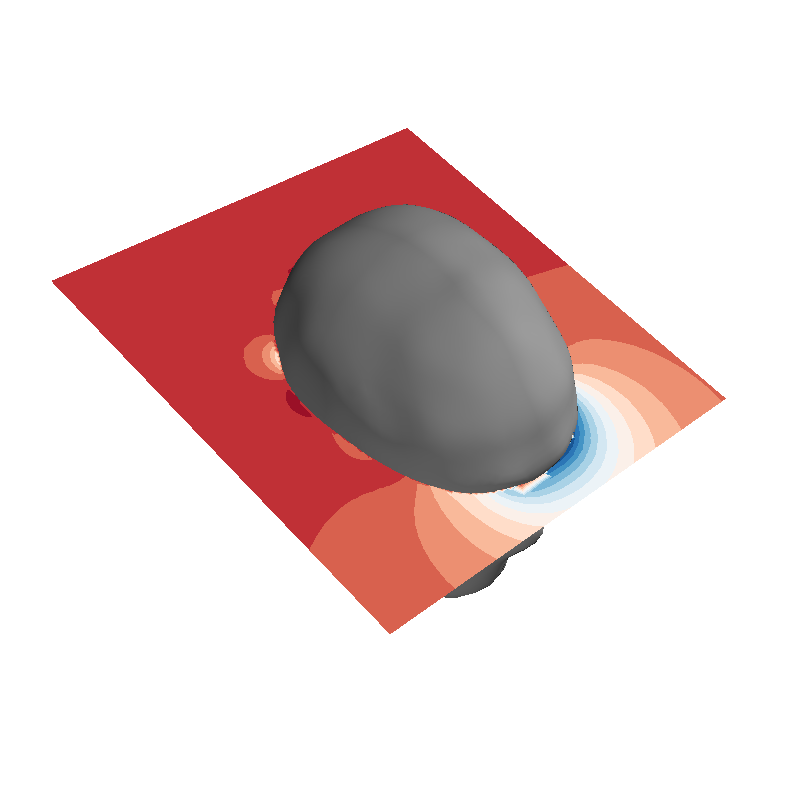

Note
Click here to download the full example code
SUH-SPH interpolation comparison¶
import numpy as np
from bfieldtools.mesh_conductor import MeshConductor, StreamFunction
from mayavi import mlab
import trimesh
import matplotlib.pyplot as plt
from bfieldtools.sphtools import basis_fields as sphfield
from bfieldtools.sphtools import basis_potentials, potential
import mne
SAVE_DIR = "./MNE interpolation/"
with np.load(SAVE_DIR + "mne_data.npz", allow_pickle=True) as data:
mesh = data["mesh"]
p = data["p"]
n = data["n"]
mesh = trimesh.Trimesh(vertices=data["vertices"], faces=data["faces"])
evoked = mne.Evoked(SAVE_DIR + "left_auditory-ave.fif")
i0, i1 = evoked.time_as_index(0.08)[0], evoked.time_as_index(0.09)[0]
field = evoked.data[:, i0:i1].mean(axis=1)
Out:
Read a total of 4 projection items:
PCA-v1 (1 x 102) active
PCA-v2 (1 x 102) active
PCA-v3 (1 x 102) active
Average EEG reference (1 x 60) active
Found the data of interest:
t = -199.80 ... 499.49 ms (Left Auditory)
0 CTF compensation matrices available
nave = 55 - aspect type = 100
Projections have already been applied. Setting proj attribute to True.
R = np.min(np.linalg.norm(p, axis=1)) - 0.02
lmax = 6 # maximum degree
Bca, Bcb = sphfield(p, lmax, normalization="energy", R=R)
# sph-components at sensors
Bca_sensors = np.einsum("ijk,ij->ik", Bca, n)
Bcb_sensors = np.einsum("ijk,ij->ik", Bcb, n)
idx = 20
evoked1 = evoked.copy()
evoked1.data[:, :] = np.tile(Bca_sensors[:, idx].T, (evoked.times.shape[0], 1)).T
evoked1.plot_topomap(times=0.080, ch_type="mag", colorbar=False)
evoked1 = evoked.copy()
evoked1.data[:, :] = np.tile(Bcb_sensors[:, idx].T, (evoked.times.shape[0], 1)).T
evoked1.plot_topomap(times=0.080, ch_type="mag", colorbar=False)

- 
Out:
<Figure size 150x195 with 1 Axes>
alpha = np.linalg.pinv(Bca_sensors, rcond=1e-15) @ field
reco_sph = np.zeros(field.shape)
i = 0
for l in range(1, lmax + 1):
for m in range(-1 * l, l + 1):
reco_sph += alpha[i] * Bca_sensors[:, i]
i += 1
- #%% Fit the surface current for the auditory evoked response using pinv
c = MeshConductor(mesh_obj=mesh, basis_name=”suh”, N_suh=35) M = c.mass B_sensors = np.einsum(“ijk,ij->ik”, c.B_coupling(p), n)
asuh = np.linalg.pinv(B_sensors, rcond=1e-15) @ field
s = StreamFunction(asuh, c) b_filt = B_sensors @ s
c = MeshConductor(mesh_obj=mesh, basis_name="suh", N_suh=250)
M = c.mass
B_sensors = np.einsum("ijk,ij->ik", c.B_coupling(p), n)
ss = np.linalg.svd(B_sensors @ B_sensors.T, False, False)
reg_exp = 1
plot_this = True
rel_errors = []
_lambda = np.max(ss) * (10 ** (-reg_exp))
# Laplacian in the suh basis is diagonal
BB = B_sensors.T @ B_sensors + _lambda * (-c.laplacian) / np.max(abs(c.laplacian))
a = np.linalg.solve(BB, B_sensors.T @ field)
s = StreamFunction(a, c)
reco_suh = B_sensors @ s
surf = s.plot(False)
surf.actor.mapper.interpolate_scalars_before_mapping = True
surf.module_manager.scalar_lut_manager.number_of_colors = 16

Out:
Calculating surface harmonics expansion...
Computing the laplacian matrix...
Computing the mass matrix...
Closed mesh or Neumann BC, leaving out the constant component
Computing the mass matrix...
Computing magnetic field coupling matrix, 2562 vertices by 102 target points... took 0.20 seconds.
Computing the laplacian matrix...
evoked1 = evoked.copy()
evoked1.data[:, :] = np.tile(field.T, (evoked.times.shape[0], 1)).T
evoked1.plot_topomap(times=0.080, ch_type="mag")
evoked1 = evoked.copy()
evoked1.data[:, :] = np.tile(reco_sph.T, (evoked.times.shape[0], 1)).T
evoked1.plot_topomap(times=0.080, ch_type="mag")
evoked1 = evoked.copy()
evoked1.data[:, :] = np.tile(reco_suh.T, (evoked.times.shape[0], 1)).T
evoked1.plot_topomap(times=0.080, ch_type="mag")
- 
Out:
<Figure size 300x195 with 2 Axes>
plt.figure()
plt.plot(alpha ** 2)
plt.figure()
plt.plot(a ** 2)

Out:
[<matplotlib.lines.Line2D object at 0x7f9696c7d310>]
U_sph = potential(
p, alpha, np.zeros(alpha.shape), lmax=lmax, normalization="energy", R=R
)
U_suh = c.U_coupling(p) @ a
Out:
Computing scalar potential coupling matrix, 2562 vertices by 102 target points... took 0.32 seconds.
evoked1 = evoked.copy()
evoked1.data[:, :] = np.tile(U_sph.T, (evoked.times.shape[0], 1)).T
evoked1.plot_topomap(times=0.080, ch_type="mag")
evoked1 = evoked.copy()
evoked1.data[:, :] = np.tile(U_suh.T, (evoked.times.shape[0], 1)).T
evoked1.plot_topomap(times=0.080, ch_type="mag")
- 
Out:
<Figure size 300x195 with 2 Axes>
Total running time of the script: ( 0 minutes 5.601 seconds)